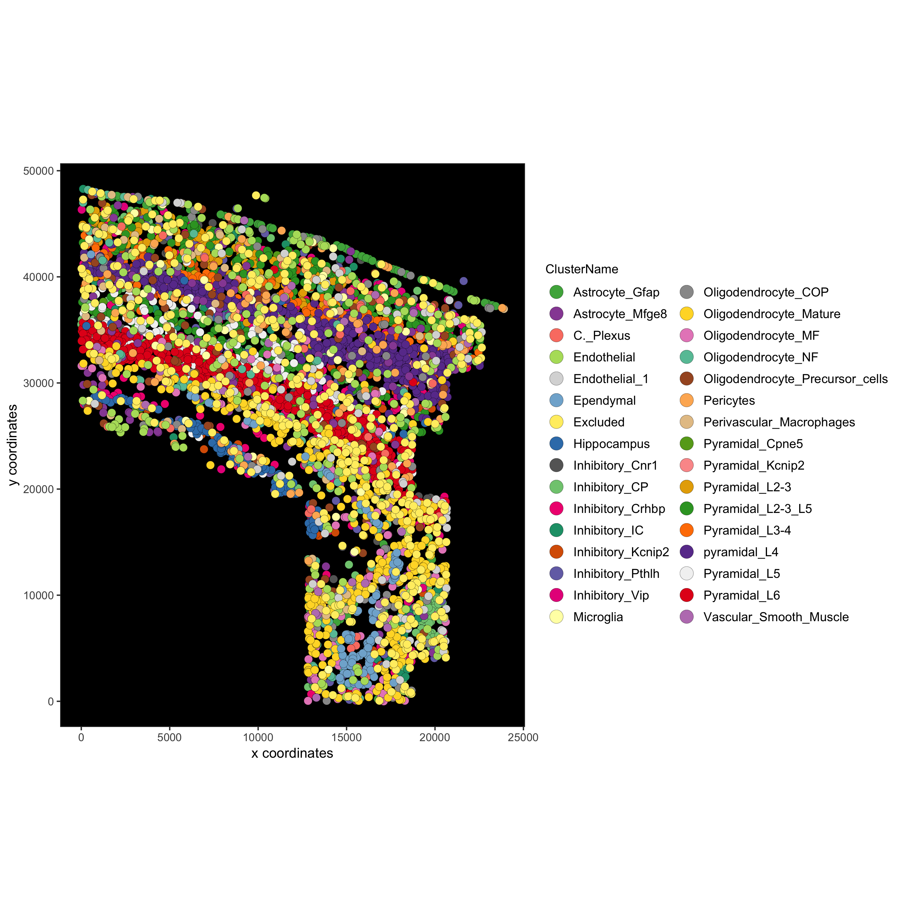

vignettes/instructions_and_plotting.Rmd
instructions_and_plotting.RmdEach Giotto function that creates a plot as 3 important parameters:
- show_plot: to print the plot to the console, default is TRUE
- return_plot: to return the plot as an object, default is TRUE
- save_plot: to automatically save the plot, default is FALSE
These parameters are automatically provided by createGiottoObject, but can also be explicitely provided using createGiottoInstructions or a named list, which can then be given to createGiottoObject as a parameter.
Besides those 3 parameters createGiottoInstructions also allows to provide other general Giotto parameters, such as your python path and other information for automatically saving a plot, like size, plotting format, etc.
In total there are 4 functions to work with setting instructions:
- createGiottoInstructions: creates instructions that can be provided to createGiottoObject
- showGiottoInstructions: to view the instructions of a Giotto object
- changeGiottoInstructions: to replace 1 or more of the instruction parameters (e.g. plotting format)
- replaceGiottoInstructions: to replace all instructions with new instructions (e.g after subsetting)
In addition, for each plot the parameters can always be manually overwritten within the plotting function itself.
Here we use the osmFISH as an example:
We also specify some other plotting parameters for the automatic saving functionality, such as the save_dir whose default is the current working directory.
library(Giotto)
# create instructions for your python path, how to view your plots and
# parameters to save your plot if wanted
my_python_path = "/your/python/path/" # set to NULL to use previously installed giotto environment
results_folder = '/path/to/your/results/'
instrs = createGiottoInstructions(python_path = my_python_path,
show_plot = FALSE,
return_plot = TRUE,
save_plot = TRUE,
save_dir = results_folder,
plot_format = 'png',
dpi = 200,
height = 9,
width = 9)
## PREPARE osmFISH DATA ####
# download dataset
getSpatialDataset(dataset = 'osmfish_SS_cortex', directory = results_folder, method = 'wget')
# path to files
osm_exprs = paste0(results_folder, "osmFISH_prep_expression.txt")
osm_locs = paste0(results_folder, "osmFISH_prep_cell_coordinates.txt")
meta_path = paste0(results_folder, "osmFISH_prep_cell_metadata.txt")
## CREATE GIOTTO OBJECT with expression data, location data and instructions
osm_test <- createGiottoObject(raw_exprs = osm_exprs,
spatial_locs = osm_locs,
instructions = instrs)
## add field annotation
metadata = data.table::fread(file = meta_path)
osm_test = addCellMetadata(osm_test, new_metadata = metadata,
by_column = T, column_cell_ID = 'CellID')
osm_test <- filterGiotto(gobject = osm_test)
osm_test <- normalizeGiotto(gobject = osm_test)
# show the provided Giotto instructions
showGiottoInstructions(osm_test)
# change a previously set parameter, e.g. change dpi = 200 to dpi = 300
osm_test = changeGiottoInstructions(osm_test, param = 'dpi', new_value = 300)Here we will show a couple of ways to save plots.
# 1. default instructions from Giotto object
spatPlot(gobject = osm_test, cell_color = 'ClusterName')
# 2. overwrite save_name instruction by providing a named list for save_param
# save_param takes all parameters of all_plots_save_function
spatPlot(gobject = osm_test, cell_color = 'ClusterName', save_param = list(save_name = 'myplot'))
# 3. overwrite save_name instruction and add specific subfolder
# save_folder creates a specific subfolder in the provided directory
spatPlot(gobject = osm_test, cell_color = 'ClusterName', point_size = 1.5,
save_param = list(save_folder = '2_Gobject', save_name = 'original_clusters', units = 'in', base_height = 6, base_width = 6))
# 4. do not save, but return as object, modify and save
# for example to create a black background:
# we can change the parameter 'background_color' to black in the spatPlot function
# OR return the ggplot object and change the panel.background to black within theme
mypl = spatPlot(gobject = osm_test, cell_color = 'ClusterName', save_plot = F)
mypl = mypl + theme(panel.background = element_rect(fill ='black'),
panel.grid = element_blank())
mypl = mypl + guides(fill = guide_legend(override.aes = list(size=5)))
mypl
# save in specified folder
gobject_folder = paste0(results_folder,'/','2_Gobject/')
if(!file.exists(gobject_folder)) dir.create(gobject_folder, recursive = T)
cowplot::save_plot(plot = mypl,
filename = 'original_clusters_black.png', path = gobject_folder,
device = png(),
dpi = 300, base_height = 10, base_width = 10)